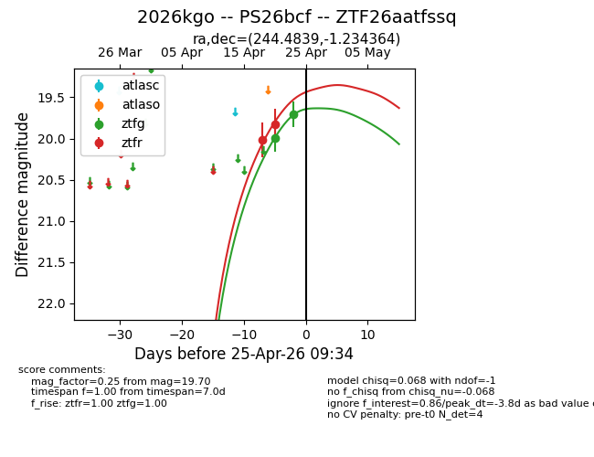
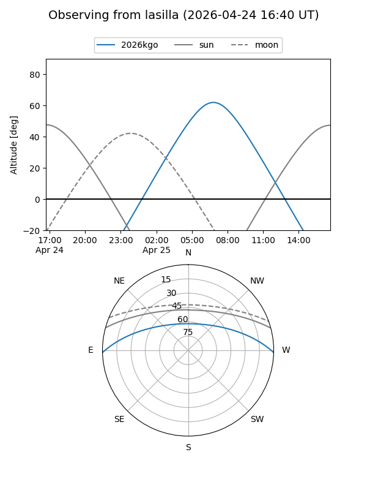
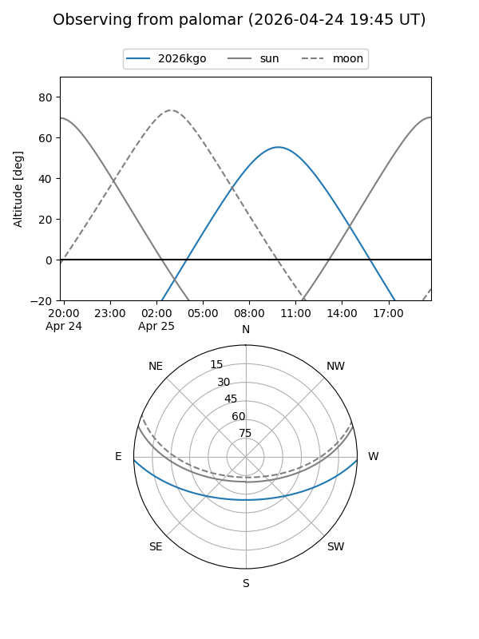
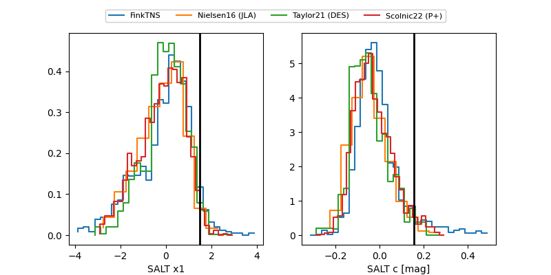

2026kgo
Target 2026kgo at 2026-04-25 09:35
Aliases and brokers:
FINK: link
Lasair: link
ALeRCE: link
TNS: link
YSE: link
alt names
ZTF26aatfssq (ztf,fink_ztf)
2026kgo (tns,yse)
PS26bcf (panstarrs)
Coordinates:
equatorial (ra, dec) = 244.4839,-1.23436
equatorial (HMS+DMS) = 16:17:56.14,-01:14:03.71
galactic (l, b) = (11.8476,+32.85844)
Flags:
Photometry:
last ztfg=19.70, ztfr=19.82
2 ztfg, 2 ztfr detections
Lightcurve

Visibility


Additional plots
